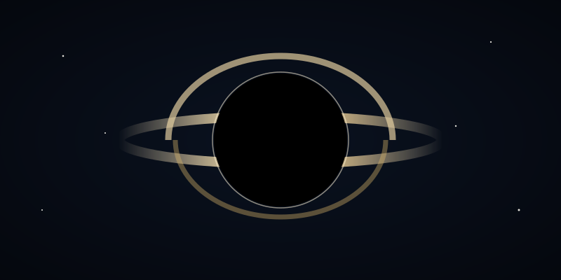

《星际穿越》里的科学：时间、引力与爱
一小时，七年
米勒星球紧贴黑洞卡冈图雅运行，强引力场让时间膨胀到极致：星球上一小时，等于地球上七年。
这不是编剧的浪漫想象，而是广义相对论的硬核推论——引力越强，时间越慢。影片科学顾问基普·索恩为此专门推导过参数，让黑洞的自旋逼近极限，才凑出这个戏剧化的时间比。
黑洞为什么长那样
卡冈图雅的视觉呈现是电影史上最"科学"的黑洞：
- 吸积盘的光被引力弯折，环绕黑洞形成上下两道弧
- 多普勒效应让一侧更亮、一侧更暗
- 事件视界之内，连光也无法逃脱

爱是一种可观测的量吗
爱不是人类发明的东西，它一直存在，而且很强大。——布兰德
这是全片最具争议的台词。科学派观众觉得它"软"，但我倾向于把它理解为一种叙事上的诚实：当所有方程都失效时，人仍然需要做出选择。
诺兰聪明的地方在于，他没有用爱去推翻科学，而是让爱成为科学尚未抵达之处的临时坐标。
结语
玉米地、书架、五维时空——《星际穿越》的每一个意象都在问同一个问题：当人类终于走向深空，我们会带走什么？
我的答案和库珀一样：带走记忆，带走牵挂，带走那些让我们成为人的东西。